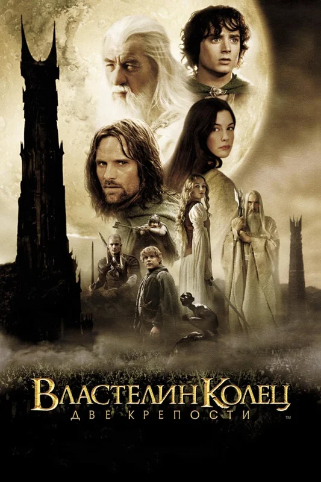
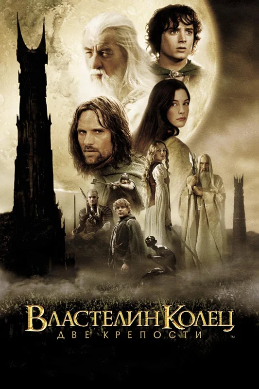

Кинотрилогия «Властели́н коле́ц» (англ. The Lord of the Rings; 2001—2003) — снятая режиссёром Питером Джексоном
серия из трёх связанных единым сюжетом кинофильмов, представляющая собой экранизацию романа Дж. Р. Р. Толкина «Властелин колец».
Сюжет трилогии следует за хоббитом Фродо Бэггинсом, который идёт в поход вместе с Братством Кольца с целью уничтожения Кольца Всевластия.
Это необходимо для окончательной победы над его создателем, Тёмным Властелином Сауроном, целью которого является захват всего Средиземья.
Братство распадается, и Фродо продолжает путешествие вместе с верным спутником Сэмом и предательским проводником Голлумом.
Тем временем Арагорн, наследник трона Гондора, его товарищи эльф Леголас, гном Гимли и волшебник Гэндальф
объединяют Свободные народы Средиземья для противостояния армиям Саурона в Войне Кольца.